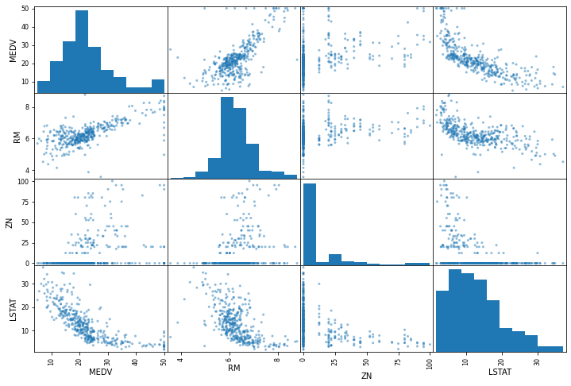
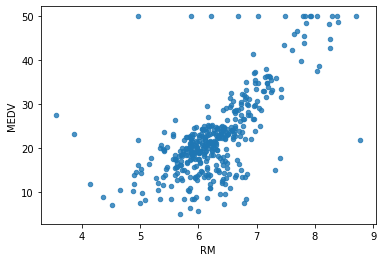

House Cost Prediction -- A Machine Learning Project
"It is a Machine Learning Project in which a model is trained for predicting house prices based on 13 features and a label."
HOUSE COST PREDICTION | Machine Learning, Supervised algorithms, Jupyter Notebook & Python
AIM: From given dataset having 14 features (including a label), train a model to predict house prices with higher accuracy.
Tools Used:
- Python 3.9.12
- Libraries: matplotlib, numpy, pandas, scipy and scikit-learn
- Jupyter Notebook
The project follows:
- Supervised learning.
- Has Regression task.
- It is a batch learning i.e. input data is not continuous.
- The model uses Root Mean Squared Error for identifying the better algorithm.
My Machine details:
- Operating System: Windows 10
- CPU: Intel(R) Core(TM)- i3 6006U CPU @ 2.00GHz
- Memory: RAM- 8GB, SSD-240GB
- GPU: 2GB
Stamp from Command Prompt for updating pip, libraries and running of Jupyter Notebook kernel:
Discription:
The model is trained for predicting the house prices based on given features dataset. The dataset is provided with certain features and a label. The dataset is taken from "housing data boston uci repository". This project is done with the help from YouTube "codeWithHarry". Respect Mr. Harry sir guided in this project, in which we have solved the prediction problem of Dragon Real EState. I have followed his video step by step to put my first practical approach in training the dataset.
Data Provided:
housing.data:
housing.names:
Making of project:
- First converted the raw data from Internet into csv (comma-separated values) file.
- Integrating each column in housing data with housing names.
- Analyzing the dataset using Pandas and matplotlib libraries.
- Then Training data & testing data splitting is done. It is done to saparate training data with test data. As doing all activities and performing algorithms directly to data can harm our predictions in real life scenarios. Test data is preserved and never touched until model is prepared.
- We used scikit learn for startified sampling. Stratified sampling is necessary as it covers all kind of data in our population. In aboove method, stratified sampling is not guranteed. For ex. CHAS has 471 "0" values and 35 "1" values. It is important to make sure training data shows both 0 and 1 values to the algorithm.
- Then we observed the correlation of label to each feature. Pearson correlation value lies between -1 and 1. Where -1 means "strong negative correlation" which means inversely propotional, 1 means "strong postive correlation" which means directly proptional.

There are no straight lines observed digonally, because it would not be much informative, hence histograms are drawn. As we have observed, LSTAT have negative correlation (-0.737663) with MEDV therefore MEDV is inversely proptional to LSTAT and similar graphs. - Choosen the best column based on linear growth from graphs i.e. RM (Number of rooms). Then, drawing plot between RM and label i.e. MEDV. We can elimate the outlier points to get more accurate results in our predictions. This is the benifit of finding correlation matrix.
 - Then, Trying out new attribute combinations to get better coorelations, like divided TAX with RM to get a new column TAXRM, which has better negstive correlation.
- Handling missing Values To take care of missing values, we have three options: -- Get rid of missing data points. -- Get rid of whole attribute. -- To replace missing values with 0, Mean or Median, whichever suites the most. Choosen the third approach.
- Used Scikit learn built-in imputer to deal with missing values.
- Feature Scaling to scale small and large values for better predictions. -- Min-Max (Normalization) (value - min)/(max - min) sklearn provides a class called MinMaxScaler -- Standardization (value-mean)/std std means standard deviation sklearn provides a class called Standard Scaler.
- In this project, Standardization is used while creating the pipeline. Pipeline is used for a series of atomation.
- Selecting a desired model for our project based on above observations. Alogorithms tested:
- LinearRegression (Rejected based on Mean: 4.972693947923473 Standard Deviation: 1.0635397337561052)
- DecisionTreeRegressor (Rejected based on Mean: 4.451684086300771 Standard Deviation: 0.9134544540801773)
- RandomForestRegressor (Choosen based on Mean: 3.3613984223751876 Standard Deviation: 0.6871641160560278)
- Evaluation of the model, to get rid of overfitting or underfitting. This is done for each algorithm to observe rmse (root mean squared error). The lesser the value the better is the algorithm. But it should not be the zero, as we are getting in DecisionTreeRegressor algorithm in which it got overfitted.
- Once overfitting was occured, we prepared for better evaluation with cross validation. In this, We will do stepwise testing for errors. Like, in first round, we will eliminate 1, and test rest of the cases, than eliminate 1,2 and test rest of the cases and so on... for 1,2,3,4,5,6,7,8..
- Scikit learn has cross_val_score function to perform the operation. By using different "rmse_scores" (root mean squared errors) of different algorithms and observing Mean and std, helped in selection of better algorithm.
- Finally, after choosing the algorithm, the model needs to be saved for future purposes.
- It is saved using "dump" function under joblib.
- Finally, testing the model for test data. In my case, it got 3.0763381131264658 as rmse value. Which is different from YouTube Video.
Results.txt file:
Results: Model is trained as expected with rmse= 3.0763381131264658 on test dataset. Which is acceptable. The model is saved with filename: DRL.joblib.
Outputs:
DragonRealEstate.ipynb
Using the model.ipnyb
Screenshot of using the saved model:

For all files please visit my: